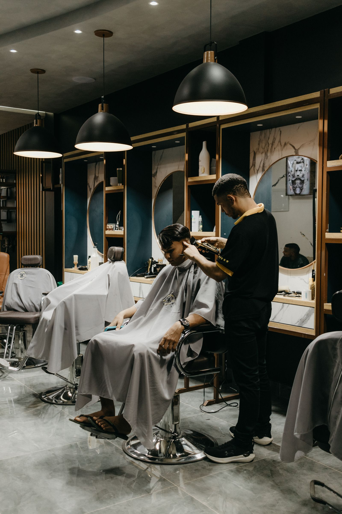

Austin runs on locals.
Magpie is building Austin's founding creator roster now: people who live here, post honestly about the businesses here, and get comped by the places their own followers can actually visit.

is forming now
Magpie is free for creators. Always. Businesses pay the platform. You never pay to join, to list, or to get booked.
Local businesses in Austin comp local creators a meal, a service or an experience, and creators post honestly, with the goal of posting within 48 hours of the visit.
How it works: claim your spot in about a minute, get your decision, finish your profile, and take first pick of comp offers when Austin opens. Paid cash campaigns sit on top of comps, and Headliners (15,000+ followers) are first in line for them. Invite other creators with your personal link and earn Momentum points: +3 per sign-up, +10 per approval. Points order the creator list businesses see.
The Austin market
Texas · Founding sign-ups open
Austin is a founding Magpie market, listed by its anchor city. Founding sign-ups are open now: the Austin founding roster forms in application order, and the market opens in a launch wave once its roster is ready. The full metro definition for Austin is published as the market opens.
Magpie keeps this page honest on purpose: no invented neighborhoods, no borrowed lists. What is true today is that Austin creators and businesses can claim founding status now, in sign-up order, before the market opens.
Running an Austin business? The field guide walks the whole play: how to find local influencers in Austin.
Creator tiers in Austin
One roster for Austin, three bands. Magpie starts at 500 total followers across your platforms. Tiers are set automatically by your total audience across platforms, and they rise as you grow.
- Everyday people with a local following
- Comp only
- Perfect first step into local posting
- Regular local posters, the roster's sweet spot
- Comp plus roster perks
- Priority access to new businesses
- Established local creators
- Comp plus eligibility for paid hero campaigns
- First pick of grand openings and launches
Magpie starts at 500 total followers across your platforms. Your tier is set automatically by your total audience across platforms, and it moves up as you grow. What gets you booked past that founding bar is an audience that is actually local and actually engages.
For Austin businesses
When the Austin market opens, local businesses post comp offers (a meal, a service, an experience) and founding creators claim them, visit like real customers, with the goal of posting within 48 hours of the visit. Every post is tracked; if a week passes with no post, the visit is replaced, and no creator can ever be required to post positively.
Ads reach everyone except the people who live nearby. Magpie puts Austin creators who live here inside your business, posting to neighbors who can walk in this week.
Join the founding list
Applications are reviewed in order. Your category spot in your trade area is held from the day you apply, and founding pricing is held while you remain subscribed.
Pick your plan
Self-Service at $199 a month (up to 5 creator visits a month, about $40 per visit), Growth at $349 a month (up to 10 visits), or Managed at $699 a month (up to 20 visits) with a coordinator running everything. Three-month minimum, then month to month.
Activate at launch
Your plan begins when Austin opens, in a launch wave as the founding roster completes. Nothing is charged before that.
Apply as a founding business How Magpie works for businesses
Straight answers
Is Magpie live in Austin yet?
Founding sign-ups are open in Austin now. Offers launch in waves as the founding roster fills. Creators who sign up now are founding creators: their status and their place in application order never expire. Businesses join the founding list now and activate when the market opens.
What is Magpie?
Magpie is the local micro-influencer platform for Austin. Local businesses book local creators, ranked by local reach (the local share of a creator's audience) rather than follower count. Businesses offer a comped visit (a meal, a service or an experience) or a paid booking at the creator's own listed rate. Magpie is built and rolling out market by market, and the founding roster here is forming now.
How do Austin businesses find micro-influencers on Magpie?
They browse the founding roster, where every creator is ranked by local audience share first and follower count second, and send an offer: a comped visit, a paid booking at the creator's listed rate, or a coupon deal. Every visit is booked, tracked and counted in the platform, and creators are found by the local audience they actually have. No agency sits in the middle, and no creator rate is ever marked up.
How do I join Magpie as a creator in Austin?
Sign up free in the Magpie app at app.magpielocal.com with Austin as your market and your real home city. Magpie starts at 500 total followers across your platforms. Your tier is set by followers: Neighbors (500 to 2,000), Locals (2,000 to 15,000) or Headliners (15,000+). When Austin opens, founding creators see every comp offer first.
How does an Austin business join?
Apply for the founding business list on the business page. Your category spot in your trade area is held in application order, founding pricing ($199 a month Self-Service, $349 a month Growth or $699 a month Managed) is held while you remain subscribed, and your plan begins when the Austin market launches. Nothing is charged today.
What does Magpie cost a business in Austin?
Published pricing, the same in every market: $199 a month for Self-Service (up to 5 creator visits a month, about $40 per creator visit), $349 a month for Growth (up to 10 creator visits a month, about $35 per creator visit) or $699 a month for Managed (up to 20 creator visits a month), with a 3-month minimum and then month to month. Founding businesses get $100 off the first month. Visits you don't use roll into the next month, then expire. The only other cost is the comp the business chooses to offer, provided at its cost, not retail.
How much do Austin creators earn on Magpie?
Joining is free, always. On comped visits your pay is the experience itself, and your rate stays published for paid work. Paid bookings start at a $50 floor, you set your own rate, and you keep 97% of every paid booking. If a business wants to reuse a comped post as an ad, that is a separate license at a fee you set: you approve it, it runs 90 days, and you keep 97% of the license fee too.
What happens on a Magpie visit in Austin?
You book a time, visit like a real customer, and the goal is to post 1 post plus 1 story within 48 hours of your visit, honest and clearly disclosed as comped. A post and a story are all a business can ask for on a comped visit. If a week passes with no post, the visit is replaced for the business, and creators who do not post lose standing on the roster.
What kinds of businesses use Magpie in Austin?
Restaurants and food trailers first, from breakfast taco counters to brisket lines, then coffee shops, bars and patios, salons, barbershops, fitness studios, shops and local services. If your customers physically visit you, your category belongs on the roster.
Can an Austin business require a positive review?
No. No creator on Magpie can ever be required to post positively, on any plan or any deal. What a business is guaranteed is the deliverable: a real visit, and an honest post and story inside the standard. A business that pressures a creator for a positive post loses its account.
Why does Magpie rank Austin creators by local reach instead of followers?
Because an Austin business needs people who can walk in this week. Local reach is the share of a creator's audience that lives in Austin, and it is the headline number on every profile, ahead of follower count. Austin fills with festival visitors: local reach separates the East Austin regular whose followers live here from the travel account whose audience left after the weekend.
I live near Austin, not in it. Can I still join?
Yes. Sign up in the app with your real home city. Founding sign-ups are open in Austin now, and creators in any city can apply once they reach 500 total followers across their platforms: if your city is not a listed market yet, your sign-up starts its list, your founding place is held in sign-up order, and signup counts are how Magpie picks what opens next.
Somewhere else? Your city could be next
Magpie is expanding rapidly, and anyone can sign up from any city, listed or not. Sign up now and finish your profile, and you are in your city's founding circle when it opens: first pick of its first businesses goes to completed founding profiles. Cities open where creators pile up first, and every completed profile moves its city closer.
Austin's founding roster is forming in sign-up order.
Creators join free and hold founding status forever. Markets open in waves as rosters fill.